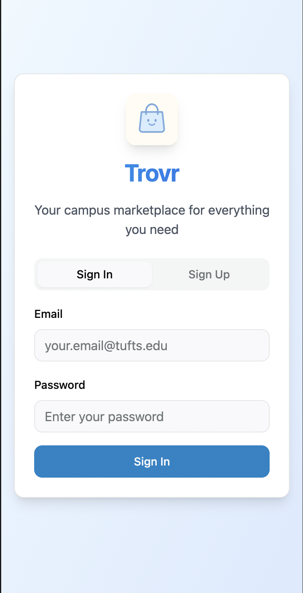

Trovr (formerly Marketly) is a campus-based marketplace app that enables university students
to share resources, offer services, and build community. Originally designed during a 36-hour
hackathon at Tufts Producthon (where it won 2nd place), Trovr has since been rebranded and is now launching as a startup.
As the UI/UX designer and brand lead, I designed the original Marketly prototype in Figma during
the hackathon, then later used Lovable for rapid prototyping when rebranding to Trovr. I also
conducted user research with 25+ college students and crafted a visual identity that
balances trust, accessibility, and campus culture. The project demonstrates how rapid
prototyping and user-centered design can quickly validate real market needs.
Original Marketly prototype demo from Tufts Producthon
User Research
Data-driven insights from 25 college students
We surveyed 25 college students across multiple universities to understand their resource-sharing
behaviors, pain points, and needs. The results validated our hypothesis and revealed specific
opportunities for design intervention.
68%
Struggle finding affordable second-hand materials
72%
Want to offer or receive student services
33%
Waste supplies annually
Key Insights:
Students prefer buying from peers they can trust and verify through campus affiliation
Convenience matters—students want transactions to happen on campus or in dorms
Beyond physical goods, students are eager to exchange skills and services (tutoring, design, coding)
Safety and trust are paramount—students need reputation systems and verified profiles
"I've bought textbooks on Facebook Marketplace, but meeting random people off-campus
feels unsafe. I wish there was a way to only see listings from verified students."
The Solution
A trusted, campus-exclusive marketplace built for students
"Trovr creates a safe space for campus commerce—where every transaction is backed by
community trust, verified identities, and peer connections."
Trovr combines marketplace functionality with community-building features, enabling students
to buy, sell, and exchange services within their verified campus network. The platform emphasizes
trust through campus verification, reputation systems, and in-person meetup coordination.
🛍️ Resource Sharing
Buy and sell textbooks, furniture, electronics, and more within your campus community
💼 Peer Services
Offer and request student services like tutoring, design work, coding help, and more
🔒 Safety & Trust
Campus verification, user ratings, and secure in-app messaging ensure safe transactions
🎓 Campus Community
Connect with peers, build reputation, and foster sustainable resource sharing
Core features addressing student pain points
Design Process
Rapid prototyping from wireframes to high-fidelity designs
Low-Fidelity Wireframes: I started by sketching core user flows for browsing
listings, creating posts, and messaging sellers. These wireframes helped the team align on
information architecture and key interactions before diving into visual design.
Early wireframes mapping out user flows and information hierarchy

User onboarding and signup experience
High-Fidelity Designs in Figma: During the hackathon, I created high-fidelity
mockups in Figma to establish the visual direction and core user flows. This allowed our development
team to build the functional prototype within the 36-hour timeline.
Prototyping with Lovable: After the hackathon when rebranding to Trovr, I used Lovable
to rapidly prototype new features and iterations. Lovable's AI-powered design tools allowed me to translate
ideas into interactive prototypes quickly, enabling faster iteration as we evolved into a startup.
Visual Design System: I created a cohesive design system featuring:
Color Palette: Purple and blue gradients conveying trust, creativity, and community
Typography: Clean, readable sans-serif fonts optimized for mobile readability
Iconography: Friendly, approachable icons representing campus life and commerce
Component Library: Reusable cards, buttons, and input fields ensuring consistency
Core feature set and functionality
Rebranding from Marketly to Trovr: As the project evolved into a startup,
we rebranded to Trovr—a name that evokes discovery, treasure-hunting, and finding hidden gems
on campus. The new identity maintains our core values while feeling more dynamic and memorable.
Final Prototype
An intuitive, community-driven marketplace experience
The final Trovr prototype showcases seamless user flows for browsing listings, posting items,
and coordinating safe meetups. The interface prioritizes clarity, trust signals, and mobile-first
interactions—ensuring students can quickly find what they need or list what they have.
Browsing and filtering marketplace listings
Key Interaction Highlights:
Intuitive category browsing with visual icons and filters
Trust indicators showing verified campus status and user ratings
In-app messaging with safety reminders for in-person meetups
Quick-post flow enabling users to list items in under 2 minutes
What's Next
Scaling from hackathon to startup
Trovr is transitioning from prototype to production-ready platform. The team is focused on
user acquisition, feature expansion, and building partnerships with university administrations
to drive adoption.
Upcoming Features:
Gamification: Reward points and badges for active community participation
AI Matching: Intelligent recommendations matching student needs with available resources
Pilot Testing: Launch at Tufts University and expand to partner campuses
Advanced Trust Features: Enhanced verification, dispute resolution, and reputation systems
"Great design isn't about perfection—it's about clarity, connection, and delivering just
enough to spark real change."
Long-term, Trovr aims to become the default resource-sharing platform for college students
nationwide, fostering sustainability, community, and affordability across campuses.
What I Learned
Key takeaways from building Trovr
Rapid prototyping accelerates validation: Using Lovable to quickly translate
ideas into interactive prototypes allowed us to test assumptions and iterate in real-time.
Speed matters when you're validating product-market fit.
User research drives design decisions: Conducting surveys early revealed
critical insights we wouldn't have guessed—like the 72% of students wanting peer services,
not just physical goods. Always start with research.
Trust is designed, not assumed: For campus marketplaces, trust mechanisms
(verification, ratings, safety features) aren't optional—they're the foundation. Every design
decision should reinforce trustworthiness.
Branding tells your story: Rebranding from Marketly to Trovr gave the product
a stronger identity and narrative. A memorable name and visual system help users emotionally
connect with your mission.
Hackathons validate ideas, startups require execution: Winning a hackathon
proved the concept had potential, but building a real startup demands user acquisition,
technical scalability, and sustained iteration.